The MP4 is a small four-legged robot with a face, a voice, and a phone app that does everything. It can walk, trot, pose, jump, show emotions, play music, hold a conversation, and run skills; small programs that make it do something new.
This guide is divided into two halves:
mpx CLI.New robot? Start with Quick start.
| Part | What it does |
|---|---|
| Four legs, three joints each | 12 servos: abduction (sideways), hip (forward/back) and knee. |
| 320 × 240 screen | The face. Shows animated eyes, emotions, GIFs and drawings. |
| Microphone and speaker | Wake word, voice chat, music. |
| Wi-Fi (2.4 GHz) | Serves the phone app; joins your network for the Store and AI. |
| USB port | Firmware flashing and serial logs. |
| Raspberry Pi (MP4+) | ROS 2 / full reinforcement-learning link. |
The ESP32-S3 inside the robot runs the control loop, the screen, audio, Wi-Fi,
the HTTP server, the on-device agent and the skill sandboxes. There is no app to
download: the robot serves the phone app itself at http://<robot-ip>/, and
the phone is only a screen and a controller.
There are currently two kinds of skills run on it:
The on-device agent is called Pupper. It answers text chat, can run skills, and is the brain behind voice turns.
| Thing | Where |
|---|---|
| Walk, trot, turn, strafe, body height and roll | Home |
| Poses, jump, stretches, built-in moves | Home / All moves |
| Emotions and GIF animations | Display, or by asking Pupper |
| Two-way chat | Chat |
| Hands-free voice | Wake word or the Chat microphone |
| Install moves and web skills | Skills / Store / Files |
| Play music | Settings › AI & Voice, or by voice |
| Calibrate legs, flip the screen, change brightness | Settings |
MPX-Dog 01-XXXXXX; it has no password by default.That is the whole setup. Charge the robot fully before the first run, then let it stand on the floor for a minute so you can see how the face and the network behave. The next sections explain each step.
Put the robot on the floor or a table with room to move. Switch it on and leave it alone for a few seconds while the control loop, screen and Wi-Fi start. You'll know its ready when it stands straight.
The face tells you what the network is doing:
| Screen | Meaning |
|---|---|
| Two eyes | Ready. The robot is on its hotspot, and may also be on your Wi-Fi. |
join <network> |
Trying to join a saved network. |
no network |
No saved network and no connection. The hotspot still works. |
An IP address, e.g. 192.168.1.105 |
Connected to your network. This is the address to open in the browser. |
ZZ |
Asleep/idle. The robot is still connected; a move or a control wakes it. |
The robot creates its own hotspot every time it boots, even when it is also connected to your Wi-Fi. That is the fallback: if you move to a new network, you can always join the hotspot and set it up again.
No screen output? Check the power switch and the battery. If the robot boots but the screen stays dark, see Troubleshooting.
The phone app is a PWA (a web app served by the robot). You do not install it from an app store, and the core controls do not need internet.
On the phone, open Wi-Fi settings and join a network named like:
MPX-Dog 01-387D1D
The suffix is derived from robot's MAC address, so every robot is has a unique
WiFi SSID. The default hotspot is open (no password). The robot's address on
its own hotspot is always 192.168.2.1.
Depending on the phone, joining may open the app automatically as a captive portal. If it does not, open a browser and go to:
http://192.168.2.1/
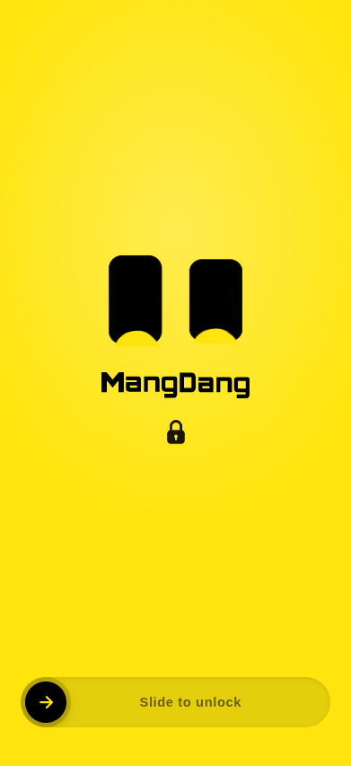
Slide the arrow to the right to unlock. On a fresh robot, the welcome screen appears; after a successful connection, welcome is skipped for 24 hours.
The welcome screen lists the networks the robot can hear:
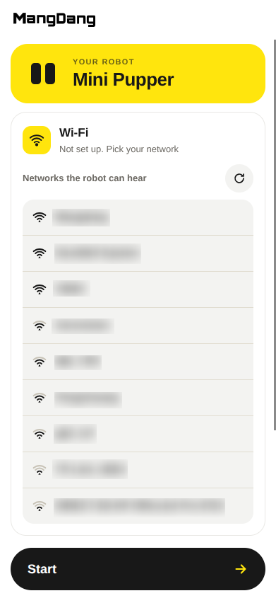
The robot restarts its network while it joins. The page may stop answering for a few seconds; the app will tell you to rejoin the hotspot if that happens. The hotspot comes back when the network is up. This is a network restart, not a reboot.
When it has joined, the welcome screen shows the connection and the robot's new LAN address:
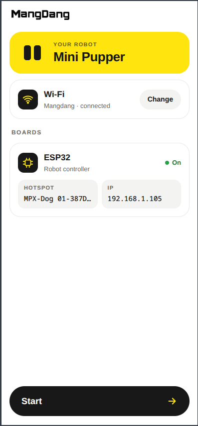
The robot's screen shows the same address, which is handy when the phone is not connected to the robot's hotspot:
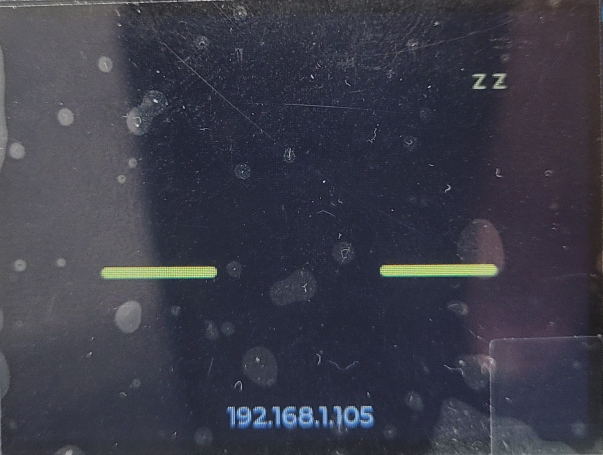
The hotspot is fine for driving, but it has no internet. For features which work through the robot, this is fine. But it is required for the Store to enter the checkout link. To connect via LAN:
http://192.168.1.105/.The IP can change. Most routers hand out a new address after a reboot. The screen always shows the current one. If you want a stable address, reserve one for the robot in your router's DHCP settings.
If your phone stays on the hotspot, http://192.168.2.1/ still works for
driving, but internet features will not work.
The PWA can be added to your phone's home screen for a full-screen, app-like window. Use your browser's Add to Home Screen / Install app action. It is still served by the robot, so it only works while the phone can reach the robot.
Note: Since the PWA is hosted via HTTP, it is considered an insecure context, therefore it can't be installed as an app unless specifically added to a browsers support list like in chorme://flags
Security: the default hotspot is open, so anyone nearby can join it. If that matters where you use the robot, set a hotspot password in Settings › ESP hotspot. It is a local access point, not an internet gateway.
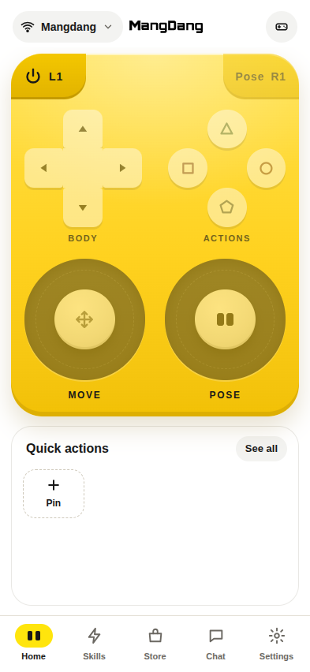
| Area | What it does |
|---|---|
| Top-left Wi-Fi pill | Shows the network the robot is on. Tap or pull down to change it. |
| Top-right gamepad icon | Full-screen landscape controller (phone only). |
| L1 / R1 | Shoulder buttons; their meaning depends on the control scheme. |
| BODY d-pad | Body height and body roll. |
| ACTIONS buttons | Face buttons. Their meaning depends on the scheme. |
| MOVE stick | Walk / strafe. |
| POSE stick | Turn, or aim the body. |
| Quick actions | Moves you pinned. See all opens the full list. |
| Bottom tabs | Home, Skills, Store, Chat, Settings. |
The power state matters: when the controller is off, movement input is disabled. Turn the controller on before trying to walk.
This is the default on a new robot. It behaves like a gamepad.
| Control | Action |
|---|---|
| L1 (left shoulder) | Power the controller on/off. Off disables all controls. |
| R1 (right shoulder) | Switch between Pose and Trot. |
| D-pad up / down | Raise / lower the body. |
| D-pad left / right | Roll the body left / right. |
| Left stick | Walk forward/back and strafe, in Trot. |
| Right stick | Turn left/right in Trot; aim yaw/pitch in Pose. |
| Blue pentagon (bottom face button) | Jump. |
| Triangle / square / circle | Unassigned in this scheme. |
| Arrow keys / WASD (desktop browser) | Walk. |
The label above the right stick shows the current mode (Pose R1 or Trot R1).
Trot is the walking gait; Pose holds the feet and lets you lean, aim and pose.
Choose this in Settings › Control scheme if you prefer direct turning and assignable face buttons.
| Control | Action |
|---|---|
| Power icon (top of the controller) | Power the controller on/off. |
| L1 / R1 | Turn left / right while held. |
| D-pad up / down | Raise / lower the body. |
| D-pad left / right | Roll the body left / right. |
| Left stick | Move. |
| Right stick | Look around; while moving, it turns. |
| Four face buttons | Assignable actions. Defaults: Jump, Stretch, Twerk, Situp. |
| Pencil icon | Edit which action each face button runs. |
The controller keeps the last scheme you selected. Any custom button assignments are stored in the app, not on the robot.
Tap a move to run it. Moves are organised in All moves:
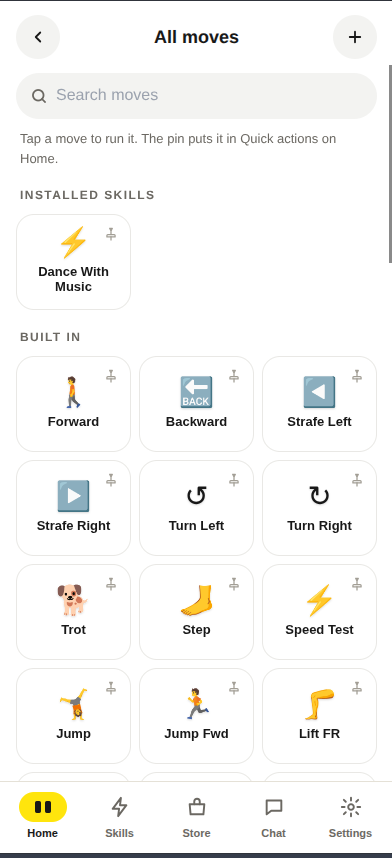
A move takes over the robot while it runs. Wake word, voice and music are stopped, and a second skill is refused rather than queued. This is deliberate: one program owns the legs at a time.
A skill is a small program that adds a behaviour: a dance, a walk, a screen drawing, a browser task. Skills are managed on the Skills tab and in Files.
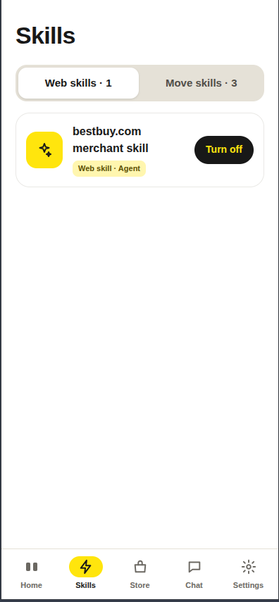
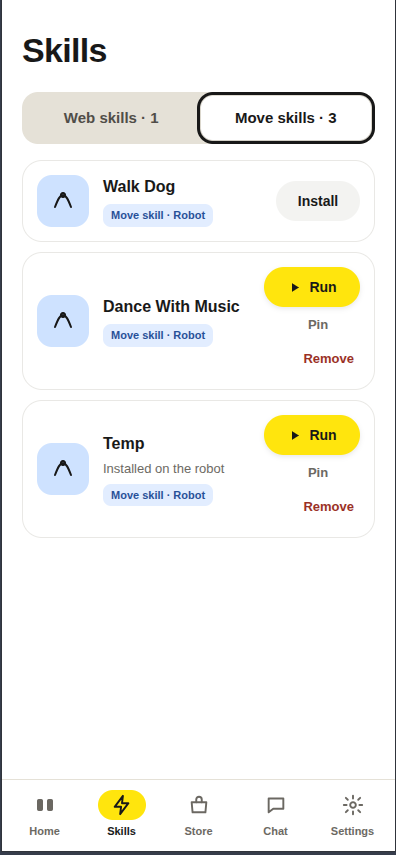
| Button | What it does |
|---|---|
| Install | Downloads and installs the skill on the robot. |
| Run | Runs it now. |
| Pin | Adds it to Quick actions on Home. |
| Remove | Deletes it from the robot. |
A move skill may be:
.mpxe) when it came from the Store; the robot decrypts it
before running..wasm) when it was built locally or sideloaded. This is the
developer format.Both run in the same WASM sandbox with the same host API. Only one skill runs at a time, and a running skill holds the robot until it finishes.
Web skills are automations that run in a browser outside the robot — for example, a merchant skill that searches a shop and returns a result. They are listed on the Web skills tab with a toggle:
| Control | What it does |
|---|---|
| Turn off / Turn on | Enables or disables the skill for the agent. |
| Web skill · Agent badge | The skill is agent-facing; it is invoked by the Pupper agent. |
Web skills need the robot to have internet access. They do not run in voice turns; see What voice can do.
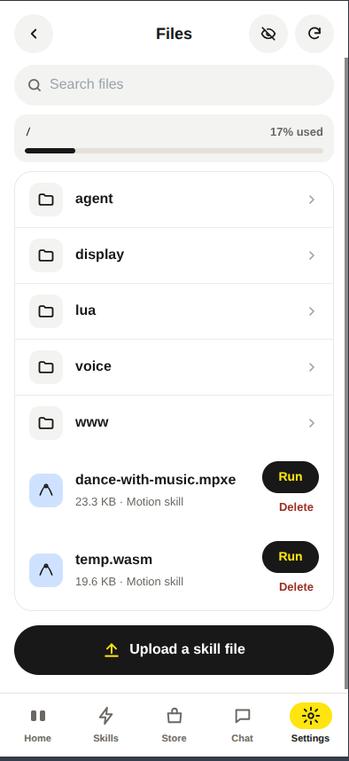
Settings › Files on the robot is a browser for the robot's LittleFS storage.
It shows the folders the robot uses (agent, display, lua, voice, www),
the space used, and every uploaded skill file. From here you can:
.wasm or .mpxe file.The Files page is the most reliable way to check a skill you installed is on the device.
All moves › + creates a custom action. Give it a name and a move or skill, then pin it to Quick actions. Custom actions are stored in the browser; the underlying move or skill still has to exist on the robot.
Currently, it act's like an alias for Move skills. In the future, you can add Lua scripts to be executable from custom actions/.
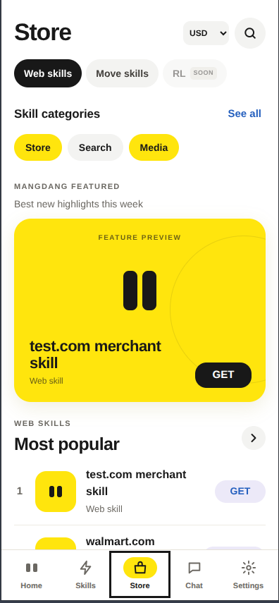
The Store is where new move and web skills come from. It needs the robot to have internet access — connect it to your Wi-Fi and open the app through the robot's LAN IP, not through the hotspot.
| Part | What it does |
|---|---|
| Currency selector | Displays prices in your currency. |
| Search | Finds skills by name. |
| Web skills / Move skills | Switches the catalogue. |
| Categories | Store, Search, Media. |
| Featured | MangDang's picks for the week. |
| Most popular | Ranked list. |
| Get | Free skill; installs it. |
| A price | Opens checkout in your browser. |
| Open | You already own it. |
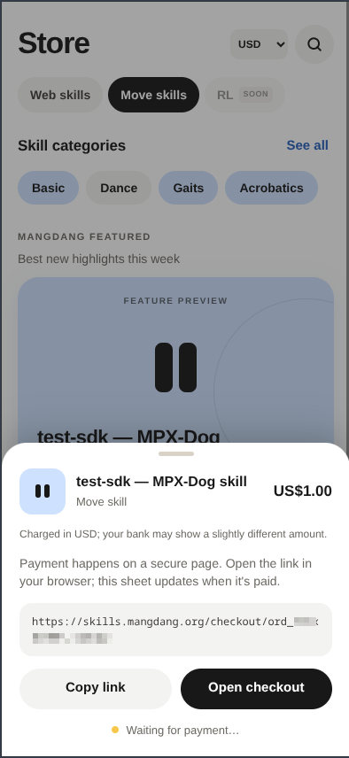
A paid skill opens the gateway's secure checkout in a browser. After payment, the app polls the order and installs the skill on the robot. Keep the app open while the order is pending.
Move skills show a 3D preview before purchase:
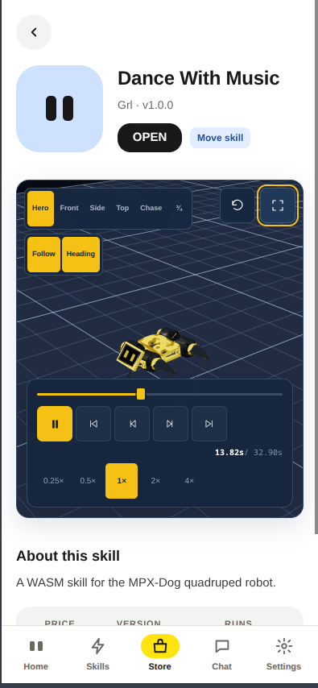
The preview is a MuJoCo simulation, and have some slight pose differences compared to the real machine.
Store empty or "offline"? The robot cannot reach the internet. Reconnect it to your Wi-Fi (the screen should show a LAN IP), then reopen the Store.
The RL category is marked soon; it is not available yet.
The Chat tab is how you talk to Pupper, the robot's on-device agent.
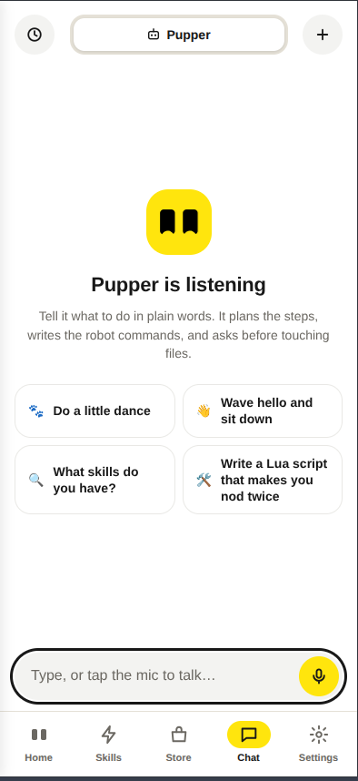
Type a request and send it. Pupper can answer questions, run a move or skill, write and run short Lua scripts, show an emotion, draw on the screen, play music, or change a setting. While it works, the message shows the steps it took; some actions ask for confirmation before doing anything destructive.
Tap the microphone in the Chat tab, or say "Hi ESP". The voice panel shows what is happening:
| Status | Meaning |
|---|---|
| Listening — speak naturally | The microphone is open. |
| Pupper is thinking | The turn is being processed. |
| Speaking — you can interrupt | The answer is playing; start talking to interrupt. |
| Ready for a follow-up | You can continue without saying the wake word again. |
Use Start talking, Speak again, Interrupt & speak, and End voice chat to control the session. You can also end a session by saying the equivalent of "goodbye" or "enough".
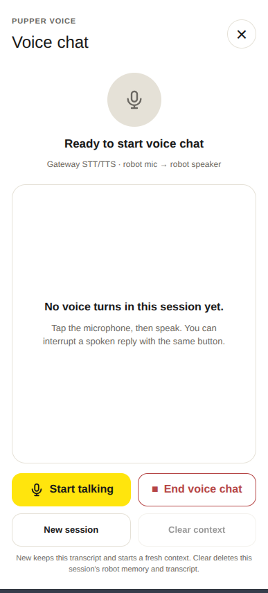
Voice needs internet: speech recognition and speech synthesis run on the MangDang gateway, and the robot's agent answers the turn. The gateway pairs with the robot on first use; if it says Not paired, use Pair with MangDang now in Settings › AI & Voice.
A voice turn is kept short so it can answer quickly. It can:
It cannot use web skills, Lua scripts, or arbitrary WASM skills in a voice turn. This is to improve the latency between user speech and response. Those tools are available in text chat, where there is time for a longer task. If you need a skill that browses a shop or runs a long sequence, type it.
Choose the brain in Settings › AI & Voice:
| Mode | Chat | Voice | Notes |
|---|---|---|---|
| MangDang AI (default) | MangDang cloud | MangDang cloud | Nothing to configure. Needs internet. |
| My own AI account | Your API key | Still MangDang's AI | The key is stored on the robot. Chat with Pupper uses your provider; voice answers still come from MangDang for now. |
| AI off | Off | Off | The microphone is never used for AI. Walking, the controller and the Store still work. |
My own AI account supports Anthropic, OpenAI, DeepSeek and custom OpenAI-compatible or Anthropic-compatible endpoints. Fill in the provider, model, base URL and API key. The saved key is masked in the app; it is not shown again after saving.
Changing the mode may apply immediately or restart the robot (about 20 seconds), depending on what changed.
Music is part of the voice/AI settings, but it also works without a chat:
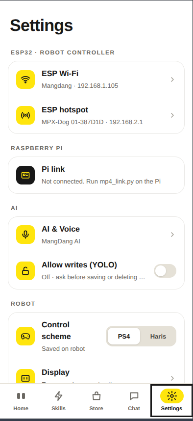
Settings is split into sections. The most useful rows:
| Section | Row | What it does |
|---|---|---|
| ESP32 | ESP Wi-Fi | Current network and IP; join, disconnect, forget, hidden network. |
| ESP32 | ESP hotspot | Rename the robot's hotspot and set a password. |
| Raspberry Pi | Pi link | Optional Pi connection; shows whether the Pi is reachable. |
| Raspberry Pi | Shut down / Restart | Stops the Pi safely. Only when a Pi is connected. |
| AI | AI & Voice | AI mode, keys, voice pairing, microphone/speaker and music. |
| AI | Allow writes (YOLO) | On: the agent saves and deletes files without asking. Off: it asks first. Leave it off unless you are testing. |
| Robot | Control scheme | PS4 or Haris; saved on the robot. |
| Robot | Display | GIFs, brightness, 180° flip. |
| Robot | Calibration | Per-joint offsets with a 3D leg view. |
| Robot | MangDang Servo Studio | Servo gains on the driver boards. Advanced. |
| Robot | Rest when idle | Lie down and switch the servos off after 2, 5, 10 or 30 minutes, or never. Rest now / Stand up now. |
| Advanced | Files on the robot | Browse, upload and run skill files. |
The robot supports 2.4 GHz Wi-Fi only. A 5 GHz-only network will not appear.
See Chat, voice and AI. The voice section also shows whether the gateway is paired, whether the microphone and speaker are ready, and a volume slider.
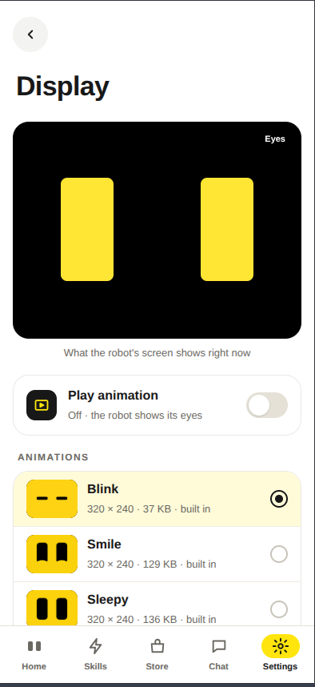
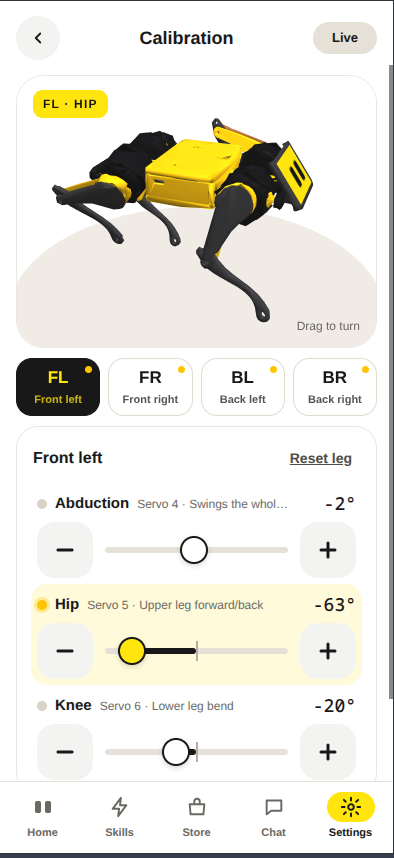
Calibration adjusts the zero offset of each servo. Use it when a leg is visibly crooked in the neutral pose, or when the robot walks in a curve with all four feet on the ground.
Do not use calibration to compensate for a mechanically bent leg, a loose horn or a broken servo. Fix the hardware first; offsets are meant for small trim only.
This exposes the servo driver gains. It is for advanced tuning: the defaults are correct for the stock robot, and changing them can make the legs buzz, overheat or oscillate. Leave it alone unless you know why you are changing it.
You do not need this section to use the robot. Firmware updates are currently done over USB; the Store updates skills, not firmware.
In a future update, we will implement OTA updates.
-DMPX_BUILD_PWA=OFF and the existing embedded web app is kept.dialout group) or run as root in
the container.The dev container is the recommended path, but you are free to use the VScode extension or installing from EspressIf's website directly.
idf.py set-target esp32s3 # first checkout only | can be skipped as auto-detect should be esp32s3
idf.py build
A fresh checkout has no sdkconfig, so the target must be given once. The
build produces:
| File | Purpose |
|---|---|
build/MPX-Dog.bin |
The application image (~4.9 MB). |
build/bootloader/bootloader.bin |
Second-stage bootloader. |
build/partition_table/partition-table.bin |
Partition layout. |
build/srmodels/srmodels.bin |
Speech models. |
build/system.bin |
Read-only system files. |
build/MPX-Dog.elf |
Symbols for decoding crashes. |
The phone app under pwa-claw/ is built and embedded automatically when its
sources changed. Useful knobs:
MPX_FORCE_PWA=1 idf.py build # rebuild the web app anyway
MPX_SKIP_PWA=1 idf.py build # embed pwa-claw/www as-is
idf.py -DMPX_BUILD_PWA=OFF build # no npm at all
Do not edit pwa-claw/www/ and expect it to reach the robot without a rebuild:
the firmware embeds the generated assets at build time.
Find the port:
# Linux
ls /dev/ttyUSB* /dev/ttyACM*
# macOS
ls /dev/cu.usbserial-* /dev/tty.usbserial-*
# Windows: Device Manager → Ports (COM & LPT)
Then:
idf.py -p /dev/ttyUSB0 flash
flash writes the bootloader, partition table, app and the extra images.
app-flash writes only the application and is faster for a normal code change.
If the port is busy, close any monitor or serial program first.
If flashing cannot connect, put the board in download mode: hold BOOT, tap RESET, release BOOT, then retry.
WARNING: Some USB cables and some computer ports could power the servos upon connection. This can be dangerous to the computer, as back-current can fry your USB port or even your motherboard. You can just reconnect the cable to stop this behavior.
idf.py -p /dev/ttyUSB0 monitor
Exit the monitor with Ctrl+]. On boot you should see the firmware start, the
display and audio initialise, the Wi-Fi AP start, and a line with the app URL.
main.cc logs internal heap after each boot stage; a large drop from the
previous boot is worth investigating.
To decode a crash address:
xtensa-esp32s3-elf-addr2line -e build/MPX-Dog.elf <address>
storage, mounted at /fs) survives a normal flash. It holds
installed skills, uploaded files and agent state.idf.py erase-flash wipes NVS and LittleFS. Everything is lost except
eFuses.0x910000. Warn
anyone using the robot before flashing such an image.The robot's identity is owned by components/mpx_identity/. There are two
sources, chosen at build time:
| Source | Used by | What it means |
|---|---|---|
| Kconfig strings (default) | Development, evaluation | Robot ID defaults to MPX-DOG-01; the AES key is a known development key. Insecure. No eFuses are touched. |
| eFuse | Production / pilot units | The robot ID is in eFuse; the per-robot key is derived in hardware from an HMAC_UP block and can be used but never read. |
The default build does not need provisioning. It boots and works as
MPX-DOG-01. That is the right choice for a developer unit or a demo.
A production unit is provisioned once, at a bench, with the pilot/bench profile:
idf.py -B build/pilot \
-DSDKCONFIG=build/pilot/sdkconfig \
-DSDKCONFIG_DEFAULTS="sdkconfig.defaults;sdkconfig.defaults.pilot" \
-DIDF_TARGET=esp32s3 -DMPX_BUILD_PWA=OFF build
That profile enables CONFIG_APP_IDENTITY_SOURCE_EFUSE and the @MPXPROV
listener on UART0 (115200 8N1). Never ship a pilot-profile image: it contains
the provisioning listener and is not the production build.
Provisioning is done by tools/mpx_provision.py with the bench private key:
python3 tools/mpx_provision.py status # read-only; safe
Irreversible.
provisionburns the robot ID and the sealed key into eFuses, andlockmakes that permanent. A mistake cannot be undone, and the private key is required to create the seal. Followdocs/PILOT_DEVICE_GUIDE.mdandcomponents/mpx_identity/step by step. Do not runprovision,resealorlockon a development robot.
The short version of what happens: the station writes the robot's UUID into
eFuse user data, seals the derived key for that chip, and the robot enrols with
the backend on its first connection. From then on, every feature asks
components/mpx_identity for the ID and key; no feature code reads eFuses
directly.
A factory that flashes a tray with the Flash Download Tool has no station in the loop: eFuse is not written by a flash image, and one image is the same for every board. Build the factory profile instead — the first boot of a blank board mints and burns its own random ID and root secret, reboots, and enrols like a station-provisioned unit:
idf.py -B build/factory -DSDKCONFIG=build/factory/sdkconfig \
-DSDKCONFIG_DEFAULTS="sdkconfig.defaults;sdkconfig.defaults.factory" build
That burn is irreversible and unattended (see docs/ROBOT_IDENTITY_AND_KEYS.md
§6.6.1); never ship the factory image or flash it onto a board you have not
decided to keep.
After provisioning, build and flash the production image: eFuse identity
enabled, provisioning listener disabled (CONFIG_APP_IDENTITY_SOURCE_EFUSE=y,
CONFIG_APP_PROVISIONING_ENABLE=n). Do not just flash the default development
image: it reads the Kconfig identity, not the eFuses. The identity lives in
eFuses, so it survives the reflash; the listener does not. Power-cycle and check
the boot log. A provisioned unit and a development unit look the same in the
app, but the development unit's identity is not unique and its key is public.
The mpx CLI lives in the separate mpx-sdk repository. It builds skills,
talks to the robot over HTTP, and publishes to the Store.
pipx install mpx
mpx signup <username> # first time
mpx login <username>
Python 3.10+ is enough for the CLI. Docker is used by default for
mpx move build (the cross-compilation toolchain runs in a container; --local
uses locally installed toolchains instead) and is required for mpx web
(the AWA browser worker).
mpx move init my_move --lang c # or wat, ts
cd my_move
mpx move build src/my_move.c # produces build/my_move.wasm
The project has a Makefile, src/, include/, GUIDE.md and a
manifest.json. The bundled host header is mpx_host.h; the firmware currently
implements host ABI v9 (107 functions). Use the header that ships with your
CLI version.
Upload and run it on the robot:
mpx move upload build/my_move.wasm --ip 192.168.1.105
mpx move list --ip 192.168.1.105
mpx move run my_move.wasm --ip 192.168.1.105
mpx move delete my_move.wasm --ip 192.168.1.105
The default host is 192.168.2.1 (the robot's hotspot). When the robot is on
your Wi-Fi, pass its LAN IP with --ip or set MPX_HOST. The port defaults to
80; use --port or MPX_PORT if you changed it.
You can also upload from the phone with Settings › Files on the robot, then press Run there.
A move skill runs in the WASM sandbox. While it runs it owns the robot: voice, wake word and music are stopped, and a second skill is refused. Design it to finish and return.
Web skills automate a browser. AWA runs them in a sandboxed Chromium outside the agent, on a worker, and gives the result back to the agent. The robot itself only sees the result.
mpx web init example.com
cd example.com
mpx web up # start the local worker/dev environment
mpx web seed . # upload this skill to the local worker
mpx web session start <skill_id> --robot MPX-DOG-01
mpx web session list
mpx web session action <session_id> ...
mpx web session get <session_id>
mpx web session end <session_id>
mpx web down
The --robot value is the robot UUID. Development firmware uses
MPX-DOG-01; a provisioned robot uses its real MPX-... ID. The development ID
is safe as a placeholder while you build.
mpx publish . --price 2.99 --currency USD
mpx visibility <skill_id> public
mpx search <query>
mpx info <skill_id>
mpx versions <skill_id>
2.99, not 299). JPY has no minor
unit.icon_url must be HTTPS; without one, the app falls
back to the Mini Pupper eyes.mpx update-manifest edits the project's manifest.json metadata (slug,
title, version, readme, tags, icon); it prompts for each field and accepts
flags such as --version and --tags. It does not pull data from the server.mpx logout removes the local session.Publishing needs an internet connection and a MangDang account. The Store's checkout and install flow is handled by the robot and the gateway, not by the CLI.
If a skill fails at runtime with something like:
failed to check signature '($i)i' and resolve pointer params for import function (env print)
failed to call unlinked import function (env print)
the skill was built against a different host ABI than the firmware implements. Fix it on the build side:
rm -rf build and rebuild the skill.mpx move build src/<name>.c --inspect to check the imports..wasm by hand.The firmware's ABI version is MPX_ABI_VERSION in
main/sdk/wasm_host_functions.h (currently 9). Changing an existing host
function's signature is a breaking change and bumps it.
| Symptom | Likely cause | What to do |
|---|---|---|
| No hotspot appears | Robot is off, still booting, or the battery is flat | Power-cycle; wait for the eyes; charge the battery. |
| Phone joins the hotspot but no page opens | Captive portal did not trigger | Open http://192.168.2.1/ in the browser. |
| Welcome screen does not appear | A successful connection is less than 24 h old | Tap the Wi-Fi pill on Home, or Settings › ESP Wi-Fi. |
| "Couldn't join" the network | Wrong password, 5 GHz-only network, or weak signal | Use 2.4 GHz; re-enter the password; move closer to the router. |
| App says offline after changing networks | Phone is on the wrong connection, or the robot changed IP | Join the same Wi-Fi as the robot; open the IP shown on its screen. |
| Controls do nothing | Controller is powered off, or the skill/voice owns the robot | Turn the controller on; wait for the skill to finish; end voice chat. |
| Robot walks in an arc | Calibration trim or a mechanical issue | Check the legs first, then calibrate. |
| A leg is crooked at rest | Servo offset or a loose horn | Calibration; if it does not respond, inspect the horn/servo. |
| Screen upside down | Mounting orientation | Settings › Display › Turned 180°. |
| Screen too dim / too bright | Brightness setting | Settings › Display › Brightness. |
| Store is empty | Robot has no internet | Connect the robot to Wi-Fi; open the app via its LAN IP. Otherwise, restart the device |
| Checkout opened but skill not installed | Payment pending, or the robot went offline | Finish checkout; keep the robot online; reopen the Store. Otherwise, contact Mangdang for support |
| Voice does not answer | Not paired, AI off, no internet, or mic busy | Check AI & Voice; pair; verify internet; end any skill. |
| Voice answers but does not run a web skill | Voice turns exclude web/Lua/WASM skills | Ask in text chat instead. |
| Skill fails immediately | ABI mismatch or missing imports | Rebuild with the matching SDK; check --inspect. |
| "Robot busy" when running a skill | Another skill is running | Wait for it to finish; only one skill runs at a time. |
| Upload rejected | File too large or wrong type | GIFs: 320×240, under 600 KB. Skills: .wasm or .mpxe. |
| Robot will not flash | Port busy, cable, or no download mode | Close the monitor; use a data cable; hold BOOT + tap RESET. |
| Boot loop after flashing | Wrong target/image or partition mismatch | Rebuild for esp32s3; reflash bootloader + partition + app. Ask for the decoded log. |
When asking for help, include the full boot log from idf.py monitor, the
image you flashed, and the exact commands you ran. Do not paste guesses.
erase-flash or provisioning commands unless you intend to lose
data or burn eFuses.build/ directory so you can recover.| Thing | Default / limit |
|---|---|
| Robot hotspot | MPX-Dog 01-XXXXXX, open, 192.168.2.1 |
| Wi-Fi | 2.4 GHz only |
| Screen | 320 × 240, landscape |
| GIF upload | 320 × 240 or smaller, under 600 KB |
| Wake word | Hi ESP |
| Control scheme | PS4 |
| AI mode | MangDang AI |
| Chat brain | Pupper (local agent) |
| Rest when idle | Configurable: 2, 5, 10, 30 min or never |
| Skills | One at a time; a run holds the robot |
| Move skill formats | .wasm (plain), .mpxe (encrypted from the Store) |
| Host ABI | v9 (107 functions) |
| Storage | LittleFS on the storage partition (/fs) |
| Firmware updates | Over USB; no OTA in this build |
| Store / AI / voice | Require the robot to have internet |
| Term | Meaning |
|---|---|
| PWA | The phone app served by the robot; opens in a browser and can be installed to the home screen. |
| Pupper | The on-device agent that answers chat and runs tools. |
| Move skill | A WASM program that drives the robot, screen, music or files. |
| Web skill | A browser automation that runs outside the robot in AWA and returns a result. |
| AWA | Agentic Web Action: the sandboxed browser worker used by web skills. |
| Trot | The walking gait. |
| Pose | A mode that holds the feet and lets you lean and aim. |
| Calibration offset | A per-servo zero trim. |
| eFuse | One-time-programmable storage inside the ESP32; holds a production robot's identity. |
| ABI | The host-function interface a WASM skill is built against. |
| LittleFS | The robot's internal filesystem for skills, uploads and agent state. |